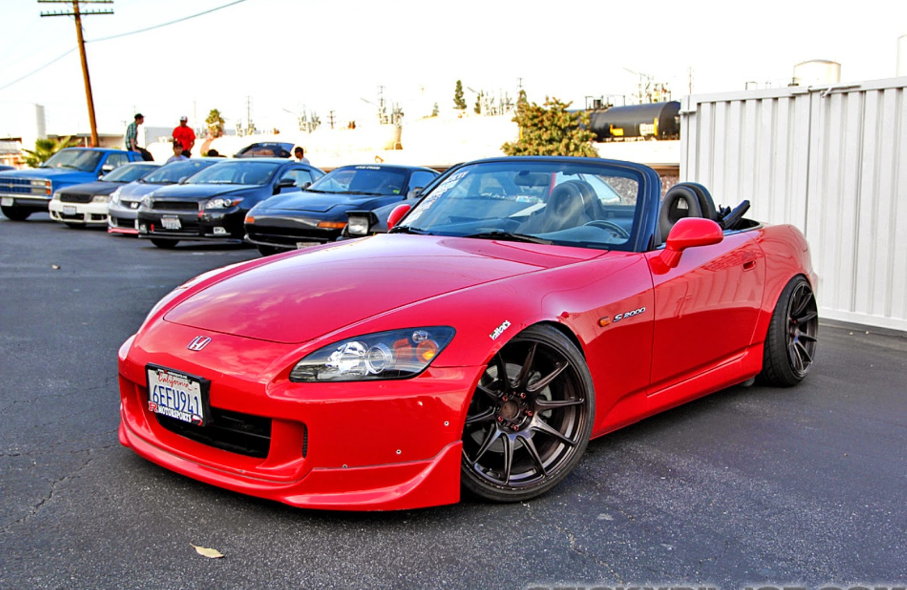

Honda S2000
El Honda S2000 es un automóvil deportivo producido por el fabricante japonés Honda desde abril de 1999 hasta junio de 2009.
El Honda S2000 es un automóvil deportivo producido por el fabricante japonés Honda desde abril de 1999 hasta junio de 2009.
Este coche en su primera generación ya demostraba aptitudes, de ser un coche peleón, ademas de ser uno de los iconos del tunning en Japón y el resto del mundo, habiendo Civic con mas de 600CV cuando su motor de serie no superaba los 200CV
Mitsubishi presentó el Lancer Evolution IX en Japón el 3 de marzo de 2005, y expuso el automóvil en el Salón del Automóvil de Ginebra para el mercado europeo el mismo día. Los mercados de América del Norte vieron el modelo expuesto en el Salón del Automóvil de Nueva York el mes siguiente.
El Subaru WRX STi de 2018 está basado en el modelo con el mismo nombre de 2015. Es una berlina con carrocería de cuatro puertas, tracción total, un motor de gasolina de 300CV de potencia y cambio de marchas manual de seis relaciones.
El Toyota Supra es un deportivo de tracción trasera producido por el fabricante japonés Toyota desde 1979 hasta 2002. En sus comienzos, el Toyota Supra derivaba del Toyota Celica, aunque ligeramente más largo y amplio. A partir de mediados de 1986, la tercera generación del Toyota Supra pasó a ser un modelo propio.
El Nissan Skyline es un automóvil deportivo fabricado por la empresa japonesa Nissan desde 1955. Desde entonces empezaron a aparecer las primeras modificaciones y versiones de este automóvil.
El Nissan Skyline fue creado como un automóvil para la familia, ya que era un sedán de cuatro puertas, con una gran capacidad de carga y un equipamiento de seguridad muy completo.